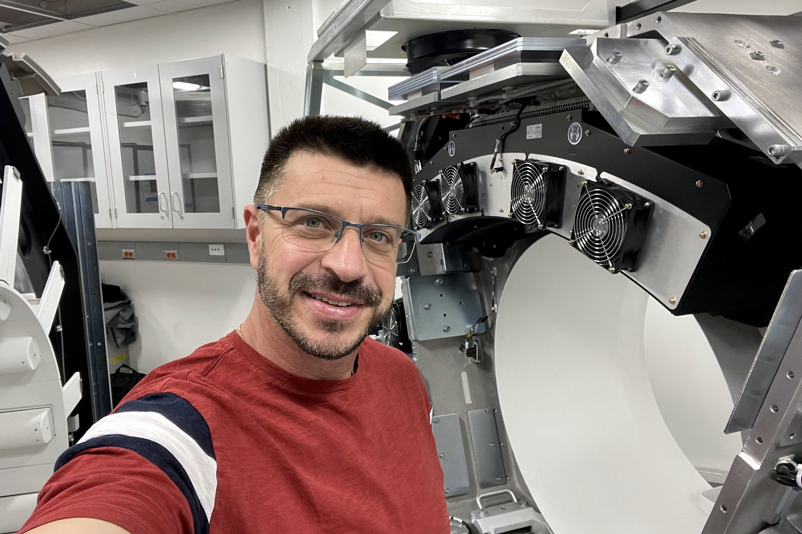
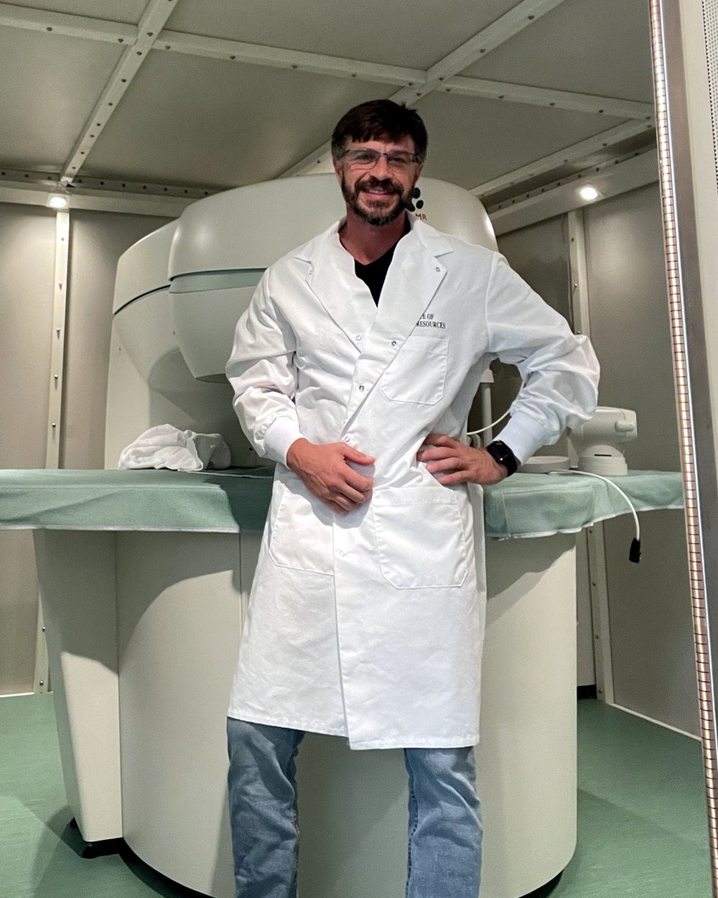

Independent field service · CT · MRI · Nuclear medicine · PET/CT
Imaging Systems Care is a one-engineer practice built on 30+ years inside CT, MRI and nuclear medicine systems. No dispatcher, no account manager: the person who answers the phone is the person who shows up. Based in Cleveland, Ohio. Working wherever the project is.

Services
Service calls, scheduled maintenance and the odd projects nobody else wants to quote. One engineer, start to finish.
Scheduled PMs to OEM procedure: mechanical, electrical, image quality, dose and QA checks. The written report is in your hands before I leave the site.
System down? Phone and remote diagnosis first; a surprising number of calls end there. On site when it needs hands, with the parts list already thought through.
Shutdown, documentation, pack-up and crating supervision for CT, MRI and gamma cameras. Handed over ready to ship, not ready to be a surprise.
Rigging coordination, assembly, cabling, calibration, acceptance testing and hand-off to the clinical team. From crate to first patient.
Reconfiguration, platform changes, hardware upgrades, building one working system out of two. The projects most shops would rather not quote.
Layout, power, HVAC and shielding requirements, workflow and vendor coordination before the system arrives. So it fits the first time.
Trailer-mounted CT and PET/CT: per-call or a standing arrangement for your fleet, with the schedule discipline mobile units demand.
A senior field engineer on your contract, under your PO and your paperwork. Multi-vendor, multi-modality, no training curve.
Systems
Not listed? Ask anyway. After thirty years most things look familiar, and if a system isn't mine, I'll say so plainly instead of learning on your clock.
Selected project · University of Wyoming
A university lab needed to image rock cores standing upright, to study how fluids move through porous stone: oil and gas recovery, reservoir behavior, CO₂ storage. A medical CT scanner is built to do the opposite. So we rebuilt one.
Horizontal configuration, new actuators and travel limits, power supplies, control circuits, wiring and integration, then several months on site commissioning it into a working research instrument. A one-year engineering project that has been producing data for a decade. In 2026 I was back on the same system for its next phase.
“Ten years later, it still works. That may be the best engineering compliment there is.”
Understand the technology deeply enough and you can make it do things it was never designed to do. That is most of what this practice is.
How a call goes
Tell me the system, the error, and what changed before it happened. A photo of the screen or a log file saves everyone an hour.
Many problems end on the phone. If not, you get a plan before anyone travels: likely parts, time on site, and what it will cost.
I arrive knowing what to look at first. You get a written service report when I leave. Every visit, not just the big ones.
Hourly billing, phone and on-site rates quoted up front. No service contract required. Travel time quoted with the job, no surprises on the invoice. Subcontract and PO-based work for ISOs, mobile fleets and institutions welcome.

Leonid Strugatsky · Owner & field engineerAbout the engineer
I'm Leonid Strugatsky, M.Sc. in Biomedical Engineering (Technion). I've spent more than thirty years as a field service engineer on SPECT/CT, PET/CT, MRI and CT: for an equipment manufacturer, for a national independent service organization, and now under my own name as Imaging Systems Care LLC in Cleveland, Ohio.
The practice is deliberately small. You deal with one engineer who has seen the system before, not a rotating roster. I work in English, Russian, Ukrainian and Hebrew, which has mattered on more than one international install.
Where
Driving distance from Cleveland. Down-system calls and PMs on a day or two of notice.
Installs, de-installs, conversions and fleet support anywhere in the country. Travel quoted up front.
Project-based work abroad: installation, commissioning, rebuilds. Four working languages help.
Contact
Model, symptom, location, and when you need it running. Calls and email are answered by me, not a service desk.